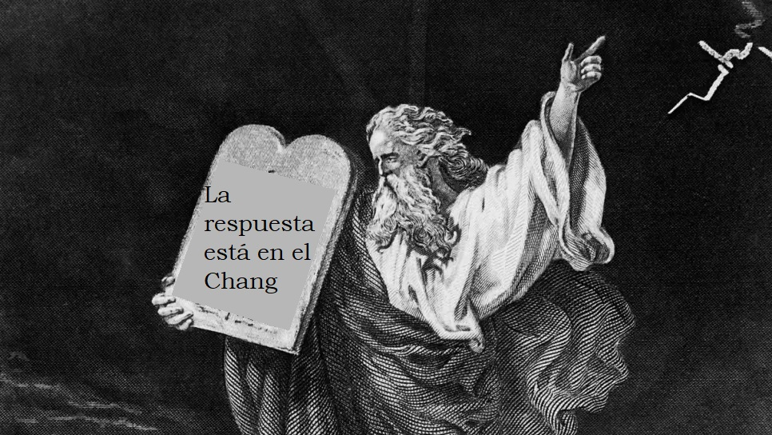

Química General
qué hay en el drive?
- programa de la materia
- gabinetes y laboratorios 2025
- ppts de teoría 2025
- taller de estudio 2025
- apuntes de parciales
- apuntes del final (general, por unidad,
preguntas, modelos, etc)
- recursos extra
sobre los apuntes
la mayoría del material está hecho en base a Chang y Whitten!
aunque estoy bastante feliz con mis apuntes, recomiendo leer el Chang primero y después usar los apuntes para reforzar o resumir conceptos
recursos
canales de youtube:
videos específicos:
los dos están en inglés, pero se entiende bien viendo los dibujos y esquemas.
tips para el final
- practica exposición oral! si bien los profes te ayudan, lo ideal sería que vos puedas desenvolverte solo (llamá a un amigo; estudien juntos, explicale a tu mascota, todo ayuda)
- practica cálculos estequiométricos, tomá tu tiempo mientras los haces. te dan una hora para resolver 6-8 ejercicios, no son nada que no hayan hecho todo el cuatri en los labs
- dormí bien !!! si querés estudiar antes de ir a rendir conviene más dormir temprano y despertarte a la madrugada a estudiar. todos se dan cuenta que trasnochaste no hagas eso
